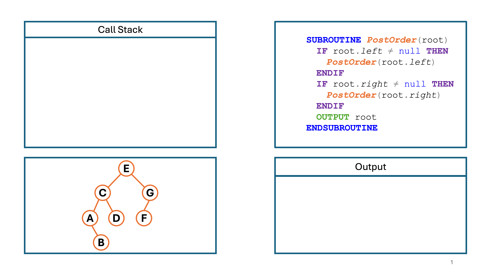
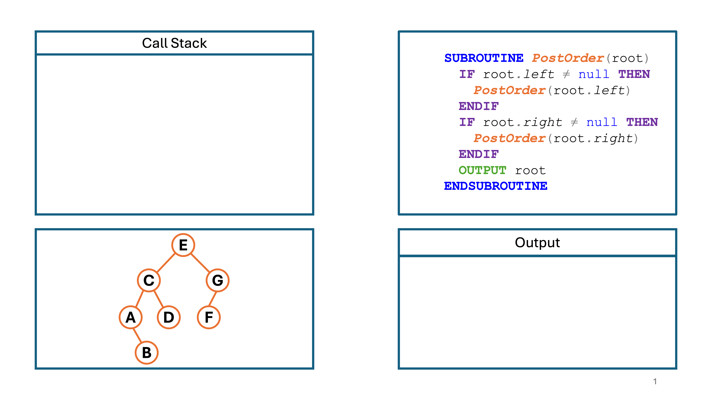

GCSE Link: None
 A tree traversal algorithm goes through a binary tree, hitting every node in a specific order.
A tree traversal algorithm goes through a binary tree, hitting every node in a specific order.
There are three types of tree traversal: pre-order, in-order, and post-order.
Example 1 shows some pseudocode for a pre-order traversal.
 Example 1
Example 1
SUBROUTINE PreOrder(root)
OUTPUT root
IF root.left ≠ null THEN
PreOrder(root.left)
ENDIF
IF root.right ≠ null THEN
PreOrder(root.right)
ENDIF
ENDSUBROUTINE
Example 2 shows some pseudocode for an in-order traversal.
 Example 2
Example 2
SUBROUTINE InOrder(root)
IF root.left ≠ null THEN
InOrder(root.left)
ENDIF
OUTPUT root
IF root.right ≠ null THEN
InOrder(root.right)
ENDIF
ENDSUBROUTINE
Example 3 shows some pseudocode for a post-order traversal.
 Example 3
Example 3
SUBROUTINE PostOrder(root)
IF root.left ≠ null THEN
PostOrder(root.left)
ENDIF
IF root.right ≠ null THEN
PostOrder(root.right)
ENDIF
OUTPUT root
ENDSUBROUTINE
As you can see from the examples, the only difference between the three algorithms is
where the output happens. In a pre-order traversal, it happens at the start. In an
in-order traversal, it happens in the middle. In a post-order traversal, it happens at the
end.
Let's try an example.
Diagram 1 shows a step-by-step animation of how a post-order traversal would work. Use the arrows to navigate.
 Diagram 1
Diagram 1
 


 What would be the output of an in-order traversal on the tree shown in Diagram 1?
What would be the output of an in-order traversal on the tree shown in Diagram 1?
ABCDEFG: an in-order traversal on a binary search tree will always give the output in
ascending (alphabetical) order.